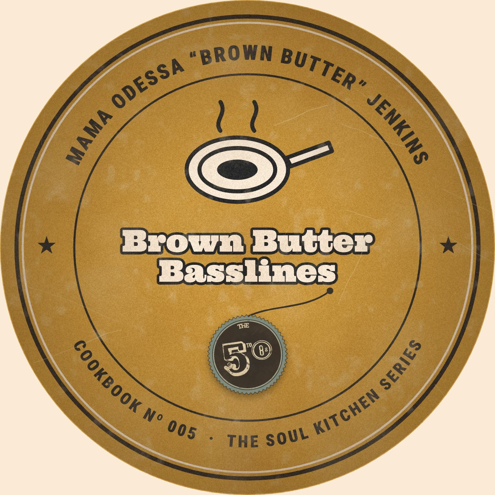
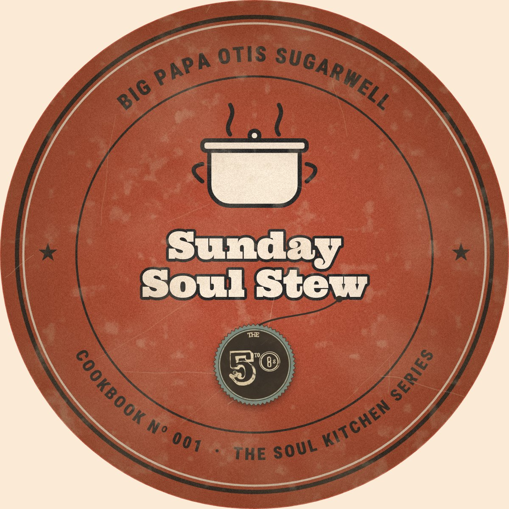
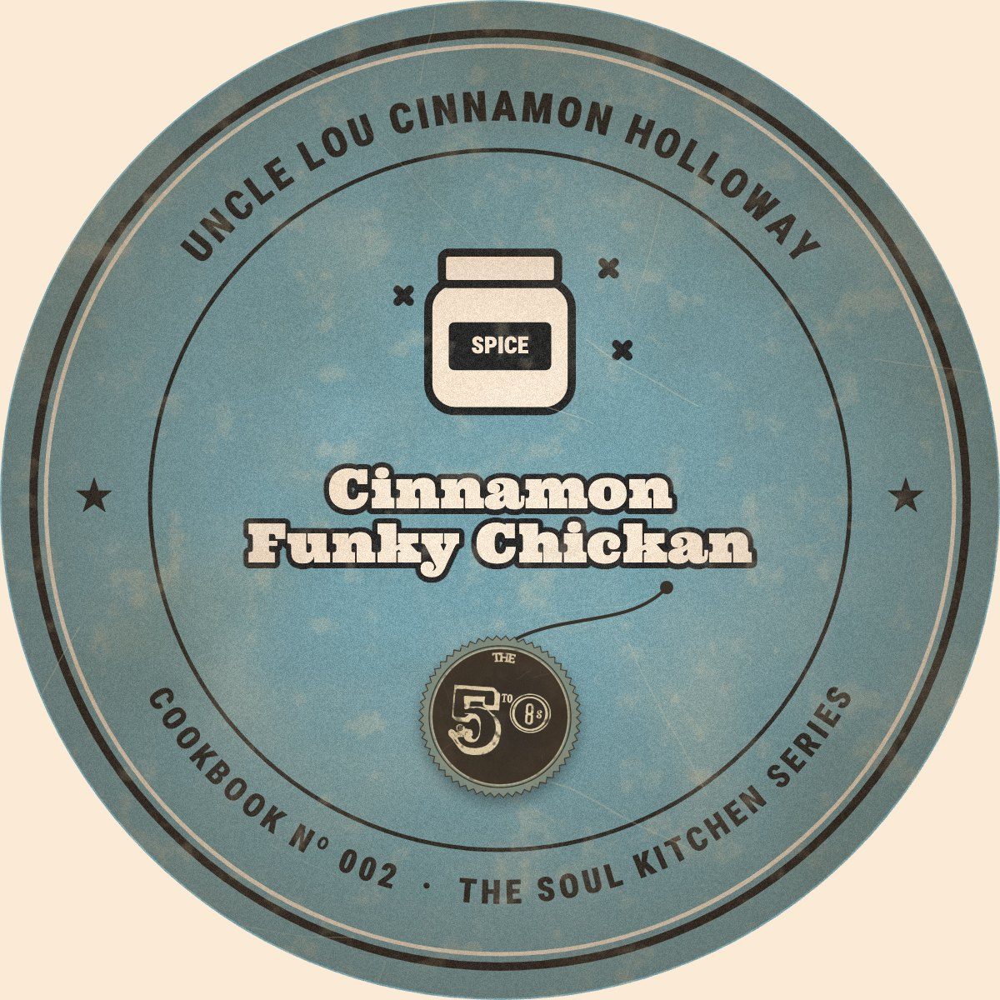
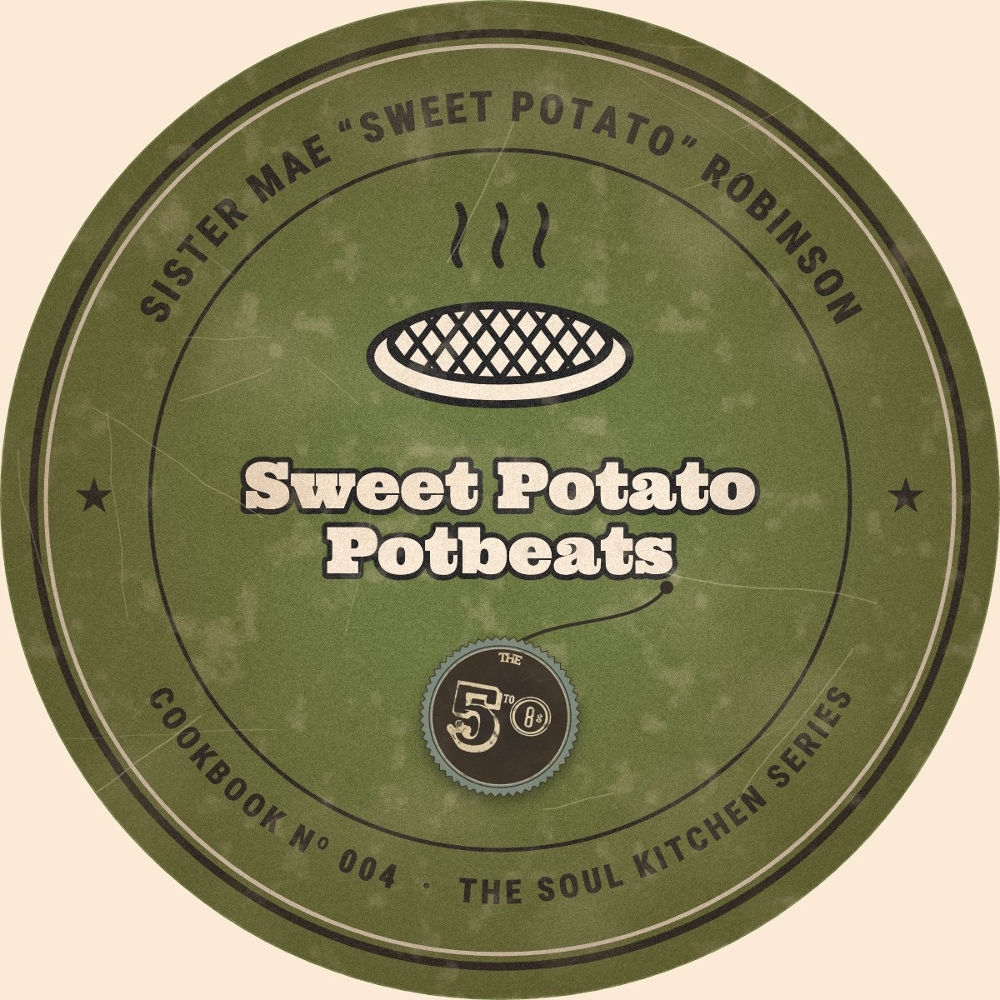
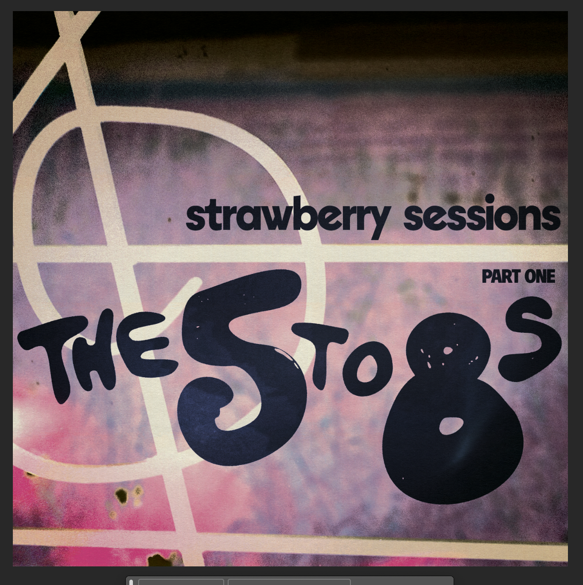
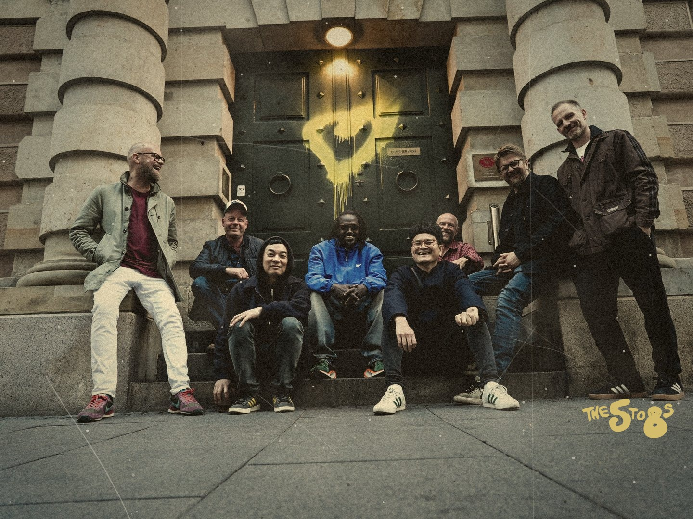
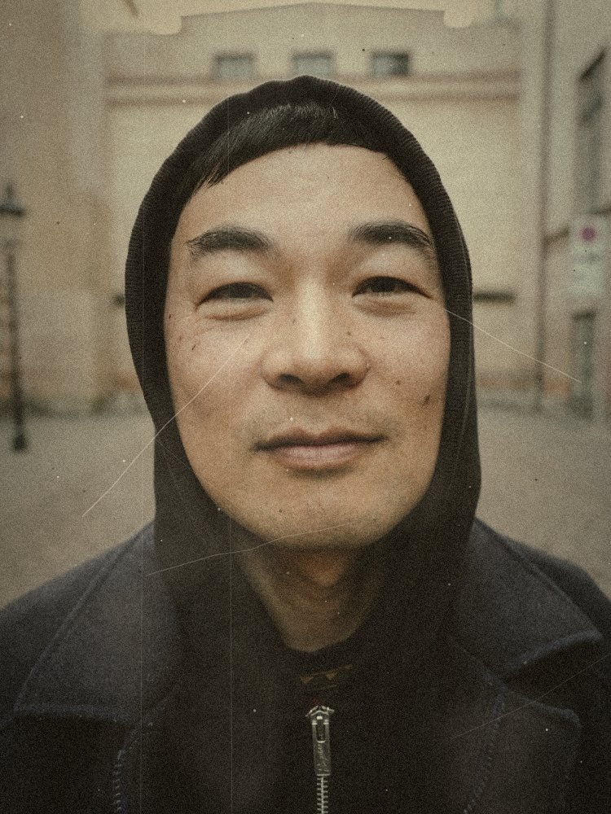

- Date
- Time
- –
- Venue
- Drop Inn, Copenhagen

Mama Odessa “Brown Butter” Jenkins

Big Papa Otis Sugarwell

Uncle Lou Cinnamon Holloway

Sister Mae “Sweet Potato” Robinson
Kitchen Heat Magazine: The 5to8s serve up a feast.
This is music played with love, generous portions, and no shortcuts. Come hungry, leave full, and don’t be surprised if you’re back for seconds.
Verdict: ★★★★★
A homemade feast of funk, soul and hip hop. Catch them live while you still can get a table.
Kitchen News
Live Shows
Old Cooking Tapes
Snippets from live shows, served hot and slightly messy.
-
Tape 01 · The band in full simmer while Papa K is adding some healthy rap spices
-
Tape 02 · Gravy Train & Pressure Cooker giving the pot a proper stir
-
Tape 03 · The crowd, thoroughly seasoned
-
Tape 04 · All burners on full throttle & Dr. Funkenstein is funkin’
Recorded Music

Fermented EP out now
Strawberry Sessions
Part One
The 5to8s’ new EP is out now, fermented in the jar and streaming on:

“Falling Deeper”
Recorded in the Strawberry Sessions, Falling Deeper is The 5to8s letting the groove take its time. Warm, hazy funk that settles in slowly, like a sauce left to simmer on the back burner, and pulls you further down with every bar.

About
There are bands that play music, and then there are bands that cook it. The 5to8s don’t just belong in the second category, they kicked down its door, licked the spoon and put it back in the drawer. Eight fairly old musicians crammed onto one tiny stage like sardines in hot sauce, and somehow nobody gets an elbow in the eye. Instead, they stir. Slowly. Suggestively. Like they know exactly what they’re doing to you.
Their sound is best described the way the band describes it themselves: a bubbling cookpot full of mama’s veggies and spices, and trust us, mama does not measure anything. Funk is the greasy, gorgeous base: funky chickan basslines so thick you could stand a fork up in them, and drum grooves tighter than the lid on grandma’s pickle jar. Soul simmers through the middle, with honey-glazed vocals so smooth they feel like a warm, fluffy pillow for your butt to sink into, and your butt will thank you. Then comes the hip hop, the ghost-pepper finale: verses sharp enough to julienne a carrot, swagger you can smell from the parking lot, and beats that hit harder than your uncle’s chili hits at 3 a.m.
What makes The 5to8s truly dangerous isn’t just the ingredients, it’s the timing. These people are kitchen sadists. They’ll let a groove bubble gently, teasing you, whispering sweet nothings into your hips, and then, without warning, crank the heat to full blast until the whole room boils over and someone loses a shoe. By the third song at their last show, the crowd had stopped being an audience and become the actual stew: hot, sticky, thoroughly seasoned, screaming hooks back at the stage and physically refusing to let the band leave. Several people may still be there. Bring a towel. Bring a change of clothes. Possibly bring a priest.
are:
-
Hannibal Gustafsson
“il Gusto”
Guitar
-
Jonas Winge Leisner
“Hot Winge”
Vocals
-
Minh Lê-Shingara
“Pressure Cooker”
Drums / Cook Pots
-

Phong Lê
“Five Spice”
Keys
-
Mogens Palsbøll
“Gravy Train”
Bass
-
Daniel Fridell
“Dr. Funkenstein”
Keys
-
Kuku Agami
“Papa K”
Rap
-
Jonas Rendbo
“Renny Roux”
Vocals
Promo
For press, venues and bookers
Press kit
Bio, press photos, logos and tech rider, all prepped and ready to plate. Ask and we’ll send the full kit.